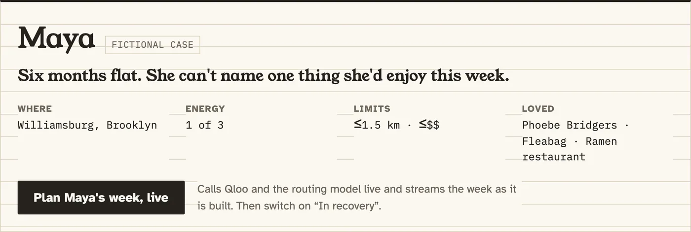
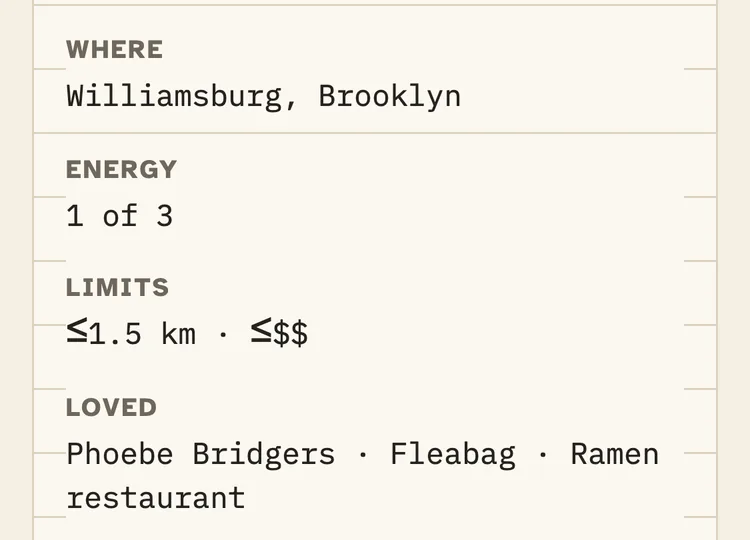
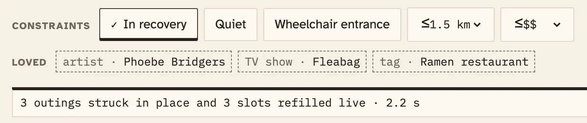
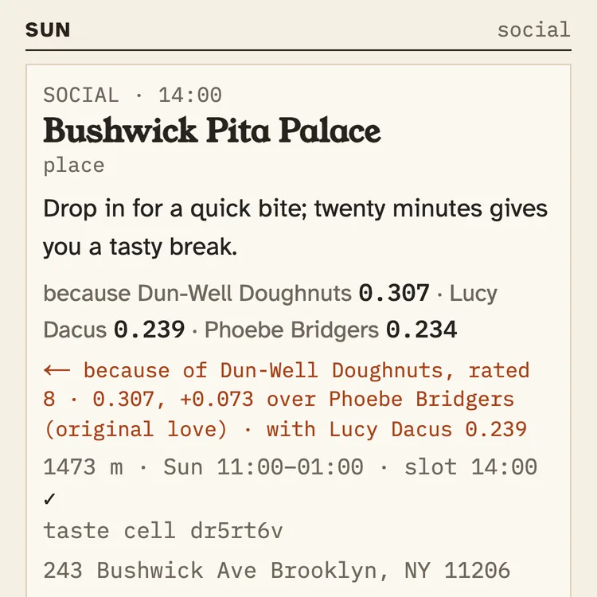

SOLO · 15:00
Patisserie Tomoko
place
because Phoebe Bridgers 0.54 · Fleabag 0.46
1161 m · Thu 12:00–18:00 · slot 15:00 ✓moved from 18:00 (closed then)
Weekly activity schedulename Maya · a fictional caseweek 1 → 2
Maya can't name one thing she'd enjoy this week. Her clinician types what she loved before: Phoebe Bridgers, Fleabag, ramen. Checked one by one against public listings by our build agent (Claude, an AI; not blind), the same LLM alone got 7 of 17 named venues wrong; Rekindle, 0 of 14 (a random 20 per arm).
no login · every case fictional · every plan, swap and toggle calls Qloo live; nothing on the path is replayed
SOLO · 15:00
Dun-Well Doughnuts
place
↻ kept from last week, rated 8 · re-checked live
because Phoebe Bridgers 0.539 · Fleabag 0.461
SOLO · 11:00
Ceremonia Bakeshop
place
← because of Dun-Well Doughnuts, rated 8 · 0.296, +0.044 over Phoebe Bridgers (original love)
SOCIAL · 14:00
Bushwick Pita Palace
place
← because of Dun-Well Doughnuts, rated 8 · 0.307, +0.073 over Phoebe Bridgers (original love) · with Lucy Dacus 0.239
Week 1 · Thu 15:00 · rated
Dun-Well Doughnuts
P 8 · M 6
Week 1 · Sun 14:00 · rated
Juice Generation
P 2 · M 3 · excluded from week 2
Week 2 · Thu · solo · 15:00
Dun-Well Doughnuts
↻ kept from last week, rated 8 · re-checked live
Week 2 · Sat · solo · 11:00
Ceremonia Bakeshop
← because of Dun-Well Doughnuts, rated 8 · 0.296, +0.044 over Phoebe Bridgers (original love)
Week 2 · Sun · social · 14:00
Bushwick Pita Palace
← because of Dun-Well Doughnuts, rated 8 · 0.307, +0.073 over Phoebe Bridgers (original love)
e0adf88a (8 Oct 2026) in the app's own words and weights. Maya is a fictional case. The threads are Qloo's attribution, not causation.0of14
named venues wrong for Rekindle, checked one by one against public listings by our build agent (Claude, an AI; not blind). The same LLM alone, asked for named places: 7 of 17.
the same LLM alone7 struck · 3 dashed
Rekindle0 struck · 6 dashed
a random 20 per arm · struck = wrong, dashed = inconclusive · bench/audit.json
0of30
in-recovery outings carry an alcohol tag or keyword with Rekindle's screen on top of Qloo's filters (10 fictional profiles).
it counts tags and keywords, not menus · bench/results.json · ablation_in_recovery
16/16
eligible re-plans (4 of 20 profiles had too few verified outings) put a ≥ 7 rating at the top of Qloo's attribution for a new card. Entities rated ≤ 3 that came back: 0.
bench/replan.json
60,000
generated cases: no outing that passes ever breaks a hard constraint. 246 tests in all, none needing a key.
tests/verify.property.test.ts · docs/rigor.json
Bench: 20 fictional profiles, finished 2026-10-07 13:11 UTC. The bench run of 7 Oct 2026 predates 27 later plan-path changes (listed in DEMO.md). The manual audit was done by our build agent (Claude, an AI), which ran the bench, so it was not blind.Every receipt, with its script, on /judge →
Monthe case

(opens the full-size capture)
(opens the full-size capture)Behavioral activation is a first-line, low-cost treatment for depression. Its core step is activity scheduling: plan specific pleasant activities for specific times, then rate them. That step breaks where it matters most.
README · The Problem. Evidence base for behavioral activation: Richards et al., Lancet 2016 (COBRA).
Tuethe loop
Deterministic code decides what is true. A refused candidate stays on the sheet, struck through with its rule, so the clinician sees what was left out and why.
Clinician · intake
3–6 loves, each confirmed against Qloo; a neighbourhood, an energy level, constraints.
LLM tool loop
Picks the rung, the domain and the query; writes one coaching line per card.
qwen3.8-flashQloo
Real places and titles near her, explained by her loves.
/v2/insights · heatmapVerifier · no I/O
PASS, REFUSE with its rule, or REVIEW for the clinician.
R-ID … R-HISTClinician gate
Approve, swap or remove each card. Nothing reaches her unapproved.
Her ratings
≥ 7 becomes a Qloo signal, ≤ 3 an exclusion.
re-plan week 2Truth boundary between the model and Qloo: radius, price, recovery, quiet and wheelchair come from the stored case, never from the model. ↺ Her ratings re-plan week two.
When In recovery went on, Rekindle asked Qloo again for Thursday: 14 alcohol tags and the three struck places excluded, her loves as the signal. From the plan's own call log, without the key.
GET /v2/insights filter.type=urn:entity:placesignal.interests.entities=<Phoebe Bridgers>,<Fleabag>signal.interests.tags=urn:tag:genre:place:restaurant:ramenfilter.hours=thursday · filter.price_level.max=2filter.location=POINT(-73.9571 40.7081) · filter.location.radius=1500filter.exclude.tags=bar, night_club, cocktail_bar, full_bar, cocktails, beer, wine, distillery, brewery, wine_bar … (14)filter.exclude.entities=<Patisserie Tomoko>,<Brooklyn Ball Factory>,<Mozzarella Kosher>feature.explainability=true · take=25→ 200 · 25 places · 231 ms→ Thursday's refill: Dun-Well Doughnuts · 1421 m · Thu 08:00–18:00 · slot 15:00 ✓ · moved from 18:00 (closed then)
Call 10 of 17 behind plan ab088de3, 8 Oct 2026 09:32 UTC. Its live call log → lists every Qloo request, with path, parameters, status and milliseconds; 19 parameters to 4 endpoints in all, counted from the code.
Every card says why, in Qloo's weights: because Phoebe Bridgers 0.54 · Fleabag 0.46. Tag loves such as ramen change the ranking, but Qloo doesn't attribute tag signals, and the card doesn't pretend it does.
The one social outing a week goes where her taste gathers: the top-affinity cell near her on a Qloo heatmap. Sunday's Juice Generation sits in cell dr5rsuw.
Wedher week, replayed
Recreated from three stored live plans of 8 Oct 2026 in the app's own words (Maya is a fictional case), beside each step's real agent trace. A step shows only the slots it changed; each opens live for the whole week.
Week 1 as rated · pleasure · mastery
THU
Dun-Well Doughnuts
P 8 · M 6
SAT
Muz Muz Shop & Cafè
P – · M –
SUN
Juice Generation
P 2 · M 3 · excluded
Week 2
SOLO · 15:00
Dun-Well Doughnuts
place
↻ kept from last week, rated 8 · re-checked live
because Phoebe Bridgers 0.539 · Fleabag 0.461
1421 m · Thu 08:00–18:00 · slot 15:00 ✓moved from 18:00 (closed then)
SOLO · 11:00
Ceremonia Bakeshop
place
← because of Dun-Well Doughnuts, rated 8 · 0.296, +0.044 over Phoebe Bridgers (original love)
563 m · Sat 09:00–15:00 · slot 11:00 ✓
SOCIAL · 14:00
Bushwick Pita Palace
place
← because of Dun-Well Doughnuts, rated 8 · 0.307, +0.073 over Phoebe Bridgers (original love) · with Lucy Dacus 0.239
1473 m · Sun 11:00–01:00 · slot 14:00 ✓taste cell dr5rt6v
Kept: Dun-Well Doughnuts, rated 8, re-checked live with Qloo /entities. Lucy Dacus, rated 7, is now a Qloo signal. Juice Generation, rated 2, is excluded.
The threads are Qloo's attribution, not causation; Monday and Tuesday are labelled ties.
Thuin recovery

(opens the full-size capture)Why a screen on top of Qloo's filter
With four bar tags excluded, 17 of the 25 places Qloo returned for Maya's Thursday query still carried alcohol tags. So Rekindle excludes 14 tags and screens every tag and token on top: 0 of 30 in-recovery outings carry an alcohol tag or keyword, against 21 of 28 with only the four bar tags excluded.
DX-REPORT §2 · bench/results.json · it counts tags and keywords, not menus (README · Limitations, 5)
Frithe re-plan
Maya rated Dun-Well Doughnuts 8: kept, re-checked live, and threaded to two new outings. Juice Generation, rated 2, stays out.

(opens the full-size capture)e0adf88a, re-planned 8 Oct 2026, reloaded 9 Oct, phone width). On a laptop the same lead also draws the thread.Satwhat the clinician hands her
The real print view of plan ab088de3 (8 Oct 2026; reloaded 9 Oct).
Sunhonest by design
“It is not a clinical tool. It is clinician support only: no diagnosis, no efficacy claims, no patient logins.”
“The alcohol screen is a deny list. It is measured (see the ablation), but a venue that serves alcohol and carries none of the tags or keywords would get through.”
“The ember thread is Qloo's attribution, not causation.”
The bench placed “TeKu Tavern + Café” for a profile not in recovery, because its café category passed R-KIND. Drinking-establishment categories are now refused for every case.
A probe showed it would refuse espresso_bar and independent_publishing (“pub”), so R-ALC matches exact tag IDs and whole tokens, with an allow list.
The manual audit was done by our build agent (Claude, an AI), which ran the bench, so it was not blind. It is labelled that way everywhere; an external audit, when one happens, works from a handout without the repo; none has returned yet.
README · What we got wrong. And a plan is slow: p50 17.43 s from click on the bench, inside the 30 s gate we set, over the 15 s we aimed for.
No. Every plan, re-plan, swap and toggle calls Qloo live; plans and re-plans also call the routing model. Captured Qloo responses are used only in unit tests.
Without keys, as in CI, the app refuses to plan rather than invent a week, and the end-to-end suite asserts exactly that. This page's replay is a recreation of three stored live plans; each step links to the real one.
No. The model picks where to look (the rung, the domain, the query) and writes one coaching line per card. Qloo picks the venue and the verifier checks it. A coaching line keyed to an ID no tool returned is dropped, and drinking language in coaching is dropped on every case.
No. It is clinician support only: no diagnosis, no efficacy claims, no patient logins. Every case in the app is fictional. Behavioral activation is the evidence-based step; Rekindle supports that step and is not itself evidence-based.
Taste entities and tags, a map point and constraint filters. The case name never leaves the server. The text typed into an intake love box is sent to Qloo to find matches, so the clinician types only the taste, and a small deny list refuses clinical words and contact details before any request (a screen, not a guarantee).
A random 20 venues per arm, from plans for 20 fictional profiles, checked one by one against public listings by our build agent (Claude, an AI; not blind), with 3 and 6 inconclusive. Wrong means not found, closed at the planned hour, or serving alcohol to a patient in recovery.
Our automated checker over-flags (it matches by street address and misses large venues such as parks), so the manual audit leads. The bench run of 7 Oct 2026 predates 27 later plan-path changes (listed in DEMO.md).
The bench measured p50 17.43 s and p95 20.61 s from click; the coaching step dominates. It meets the 30 s gate we set, not the 15 s we aimed for. The week streams in card by card with the agent trace live, so the wait shows its work.
A coverage refusal. The sheet says how many outings it could verify and why each empty slot is empty; a wider radius is offered only with the clinician's consent. It never fills a slot with an unverified suggestion. Try Cal, the sparse-coverage case, on /judge.
Yes. New fictional case opens the intake: type 3–6 loves, confirm each against Qloo's live matches, pick a neighbourhood, energy, budget and constraints, and save. Week 1 then plans live.
Plan Maya's week, live.
About 20 seconds, no login, every case fictional. Then switch on In recovery and watch the strikes.